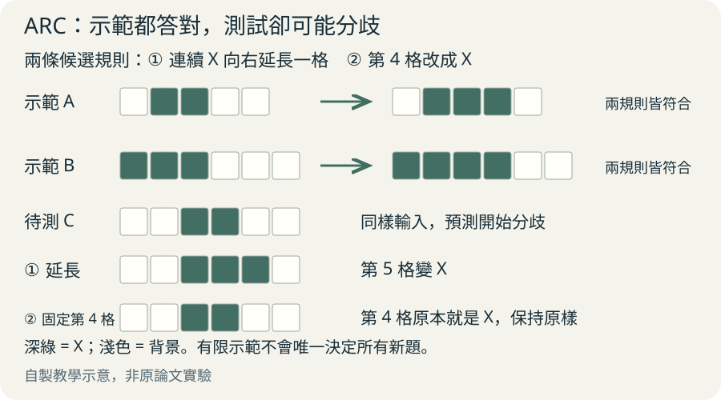
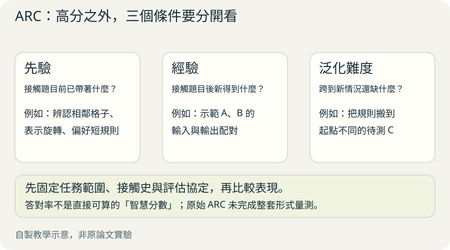
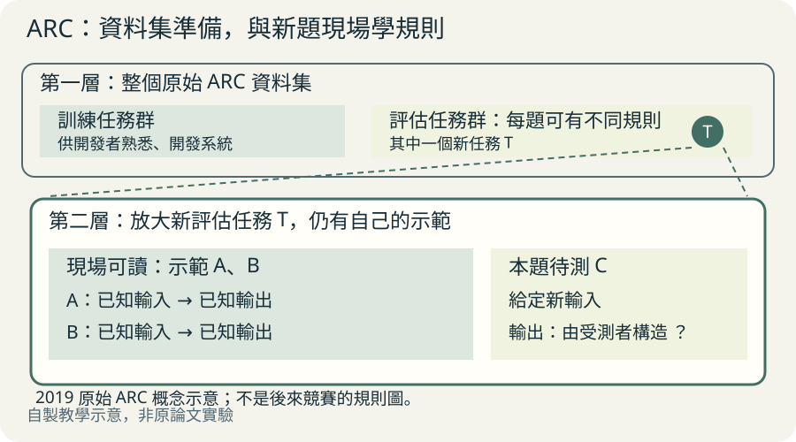

想像兩個孩子都考九十分。一個拿過同一張考卷，另一個只看過幾個例題。這是教學比喻：同樣答對，不代表學會新事情的能力一樣。Chollet 的問題是，我們怎麼知道 AI 真的學會一個新規則，而不是事前就準備好了答案？
先玩一題：你猜它在改什麼？
以下是本文自編的教學小例，不是論文原題，也不主張符合 ARC 題目設計的完整要求。點號是空格，X 是有色格。先看兩組輸入與輸出，再想待測 C 應該長什麼樣。
我們先用一列格子，因為這樣能把注意力放在規則，而不是複雜圖案。A 和 B 都只多了一格 X，但新增格子的理由還沒確定。
示範 A
輸入：. X X . .
輸出：. X X X .
示範 B
輸入：X X X . . .
輸出：X X X X . .
待測 C
輸入：. . X X . .兩個規則都答對，下一題才分開
候選規則甲是「把第 4 格改成 X」。候選規則乙是「把連續的一段 X 向右延長一格」。兩者在 A、B 都能交出正確答案，所以只看示範答對率，分不出誰學到了什麼。
把它們放到 C，差別就出現了。甲保持原樣，因為第 4 格本來就是 X；乙把第 5 格也變成 X。新的輸入讓我們看見兩個規則對未知情況的不同預測。這仍沒有從邏輯上證明乙是唯一答案；有限示範還能容納其他規則。
再想一步：如果 X 已經碰到最右邊，該擴大格子、保持不動，還是改方向？這些示範沒有告訴我們。遇到缺資訊時，能指出未知，也是一種理解。
C 的兩種預測
甲：. . X X . .
乙：. . X X X .同樣答對示範，未必學到同一個規則

放大閱讀圖解 ↗ · 窄螢幕可在圖內左右滑動。

圖解文字說明
- 甲：固定位置
把第 4 格改成 X。A、B 都答對；C 第 4 格本來就是 X，所以輸出仍為 . . X X . .
- 乙：相對物件
把連續 X 段向右延長一格。A、B 都答對；C 改第 5 格，輸出為 . . X X X .
聰明的線索藏在學習過程裡
Chollet 把已經會做某件事叫作技能，把學會新技能的能力另拉出來討論。技能習得效率，就是系統用已有知識和新資訊，學會應付未知情況的效率。原文定位：II.2.1。
回到格子例，你把相鄰 X 看成一段，這是事前帶來的理解工具，也就是先驗。A、B 的示範是新經驗。把規則搬到起點不同的 C，是一次泛化嘗試，也就是把所學用到新情況。
所以要比較兩個系統，我們還得問：它們原來知道多少？接觸了多少相關資訊？新題跟示範有多大差別？否則，背過考卷與現場學會規則，很容易被算成同一回事。這些追問可用來設計評估，不能直接替這道玩具題算出正式智慧分數。
把一次作答拆成三個追問

放大閱讀圖解 ↗ · 窄螢幕可在圖內左右滑動。

圖解文字說明
- 先驗：原來知道什麼？
能把相鄰 X 看成一段，能描述右方與相對位置。先交代起點，才知道哪些能力是事前帶來的。
- 經驗：新得到什麼？
看見 A、B 的輸入與輸出。檢查提供了多少相關資訊，才知道系統靠多少提示學習。
- 泛化：跨過什麼差別？
C 的 X 段換了位置。檢查新情況中的預測，才看得到學到的規則能走多遠；正式泛化難度仍需額外量測。
ARC 把這種追問做成什麼測驗？
ARC 是 Abstraction and Reasoning Corpus，原論文提出的一套抽象格子任務。每道新任務給幾組輸入／輸出示範，受測者要自己構造待測輸入的輸出，連網格大小也要決定。原文定位：III.1.1。
關鍵有兩層：整個資料集的訓練任務供開發者熟悉與開發；每一道評估任務本身仍有示範，讓系統學習那一題的新規則。它不是學會單一固定映射後，把同一映射套遍所有題。
作者希望測到連開發者也沒事先準備好的任務。原文稱為 developer-aware generalization，可理解成把開發者的事前準備也納入檢查。這是設計目標，評估時仍須查清楚資料接觸史。
兩層訓練，不是同一回事

放大閱讀圖解 ↗ · 窄螢幕可在圖內左右滑動。

圖解文字說明
- 整個資料集的訓練任務
開發者用一批任務熟悉題型、開發系統。這是在準備會學規則的工具。
- 每道新題自己的示範
面對新任務時，從該題的輸入／輸出示範學規則，再預測待測輸入。這是在現場學這一題。
高分仍然不能保證什麼？
原論文沒有證明「解完 ARC 就等於 AGI」。作者明列限制：尚未量化每題的泛化難度，尚未建立分數對其他活動的預測效度，題目數量與多樣性可能不足，也可能存在捷徑。原文定位：III.2。
用對稱、物件與計數等共同起點來比較人機，是作者的設計想法；這些先驗是否真的被題目完整捕捉，仍是問題。因此，原始 ARC 的高分能支持什麼結論，必須連同版本、接觸史與評估規則一起說。
本頁介紹 2019 年原始論文。後來使用 ARC-AGI 名稱的資料版本、競賽與排行榜，需要另外查各自規格。能解抽象格子，也還需要其他實驗，才能判斷是否會做科學研究或操作真實物件。
同樣高分，還要查看準備過程
- 事前見過答案
遇到熟悉題目，取出已備好的答案。能答對，但這次作答沒有證明它會學新規則。
- 新題現場學規則
從少量示範建立規則，再對新輸入作答。仍要查示範量、已有工具與新題差異，才能比較學習能力。
再深入：效率不只是少看幾筆資料
原文 II.2.1 用相對演算法複雜度形式化概念：已知一些資訊後，要描述解法還需要多長的程式。先驗關注系統一開始已掌握多少解題資訊；經驗關注接觸任務後得到的相關、新穎資訊，不等於資料檔大小。
泛化難度關注從訓練時可得資訊跨到評估情況，還需要補上多少解題結構。它不等於人覺得難，也不等於格子尺寸大。原文又把智慧的比較繫於任務範圍，避免把某個範圍的表現當成全能。
這裡的效率主要是資訊效率。運算速度、時間與能源效率在 II.2.2 另行討論。原始 ARC 並沒有把整套形式定義直接算成一個智慧指數；不要從答對率反推公式中的各個量。
原始規格與數字，回到哪裡查？
原文 v2 的 III.1.1 記載：400 道訓練任務、600 道評估任務；評估任務分成公開 400 道與私有 200 道。每題平均 3.3 組示範；網格有 10 種符號，每邊 1 至 30 格。這些是原始論文規格。
同節記載每個測試例允許 3 次嘗試，只回饋正確或錯誤；任務內所有測試例都精確答對，才算解開該任務。這種二元分數缺少細節，也是作者在 III.2 討論的限制。
III.1.2 列出接近 Core Knowledge 的先驗。Core Knowledge 是被假設為人類早期認知基礎的核心知識，包括物件性、目標導向、數與計數、基本幾何與拓撲。這不是零先驗測驗，也不代表這些先驗已被充分驗證。
III.1.4 的初步人類可行性證據是：每一道題都至少被三位高 IQ 受測者中的一位解出。這不是大樣本的人類常模，不能拿來直接宣稱一般人的平均成績。
帶著問題讀原文
先看圖 4。它把示範與待測輸入擺在一起，題目目標是補完對稱圖案；你能直接看懂作答者收到了什麼、還必須產生什麼。接著看圖 5，比較空間相鄰與顏色連續性如何形成物件，理解為什麼相同格子表示仍需要先驗。
第一次讀 II.2.1 開頭與結尾，問「技能與學習能力差在哪裡」；接著讀 III.1.1–III.1.2，看理想如何變成題目；再讀 III.2，看設計還欠哪些驗證。
第二次讀 I.3.1–I.3.2 的評估與泛化層級，再回 II.2.1 看形式定義、II.3.1 看公平比較。對程式合成有興趣，可讀 III.1.4：它把產生解題程式的系統，和產出的解題程式分開看。程式合成就是依規格或示範產生程式。
原文與來源
此頁依下列固定快照編寫；教學例子與程式片段用來解釋方法，請回到原文確認研究設定與結果。